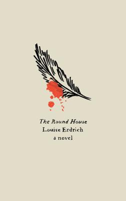

Mymalexie
Club de lecture
- Alice's Adventures in Wonderland and Through the Looking Glass — Lewis Carroll
Mercredi 20 Septembre 2023 à 10h00 - L'Analphabète & Le grand cahier — Agota Kristof
Lundi 17 août 2023 à 10h30Summary : Chacun s'accorde à dire que Le Grand Cahier a su captiver avec son style épuré, son ambiance surréaliste, ses personnages hors du commun et ses rebondissements inattendus, le tout apporté par une narration en première personne plurielle. Concernant 'l'Analphabète', un membre a été particulièrement marqué par la divergence entre ses valeurs et celles de l'autrice, une perception qui a d'ailleurs teinté sa lecture de Le Grand Cahier. Le brunch.. -  The Round House: A Novel — Louise Erdrich
Mercredi 14 juin 2023 à 14h00Summary : Everyone enjoyed this book. Particular highlights were: the context of a first nation reservation (for many of us, a relatively unknown culture), the theme of justice (in its many forms and with its many limitations), the mixture of multiple spiritual systems and the beautiful descriptions of a young teenager wrestling with his emotions surrounding parental strife. The book captures a summer of extreme trauma that simultaneously contains many moments of simply being a teenager with your friends over the summer holidays. Afternoon Tea..  Des éclairs — Jean Echenoz
Des éclairs — Jean Echenoz
Lundi 9 mai 2023 à 10h30.
Synthèse : Les avis sont partagés. Alors que certains apprécient la prose aérée, d’autres la trouve trop simple. Néon-moins, tout le monde s’accorde sur le fait que l’histoire est intéressante et ressortons enrichis de cette lecture nous ayant fait découvrir l’histoire de Gregor. Une de nos membres a été particulièrement frappée par l'injustice que Gregor a subie tout au long de sa vie, s'identifiant d'autant plus à lui en tant que compatriote serbe. Le brunch.
{kind=link}
{kind=link}
{kind=link}